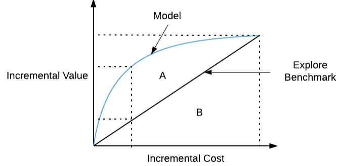
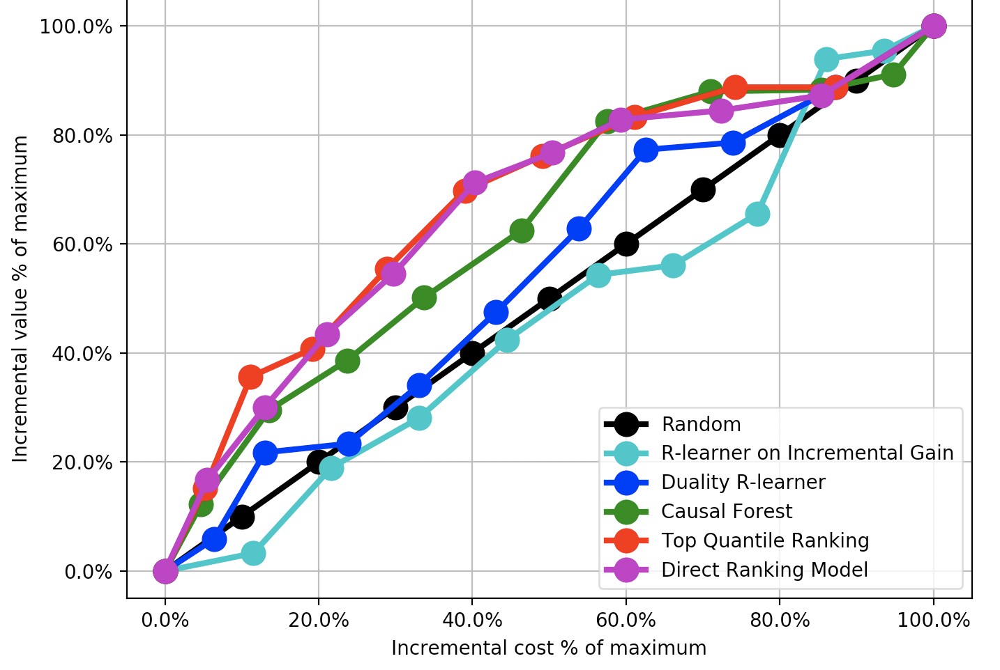
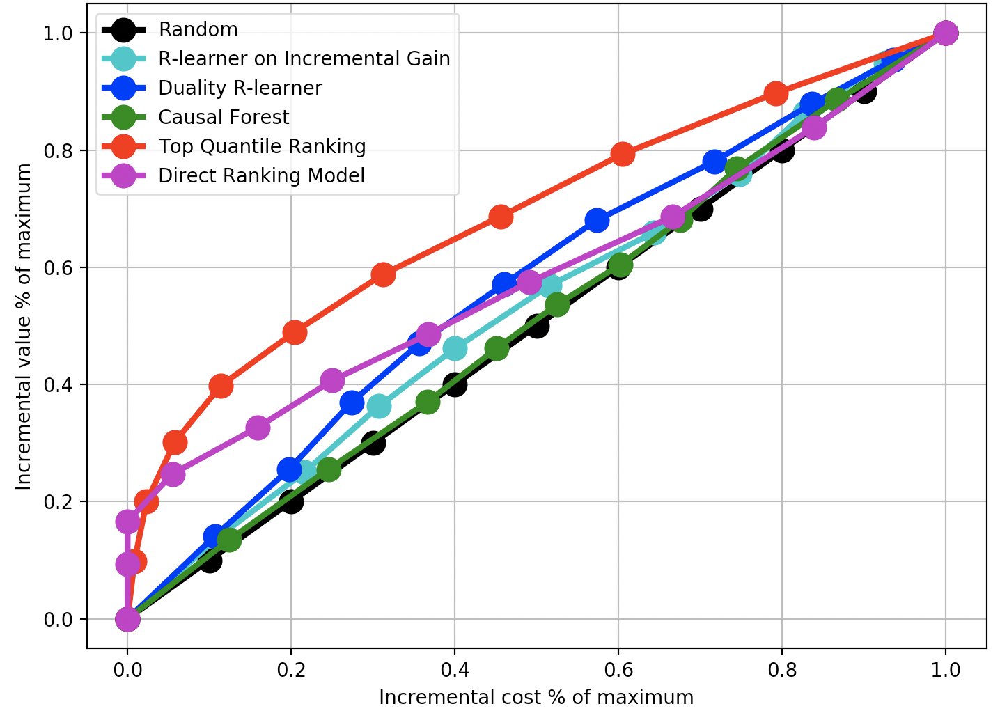
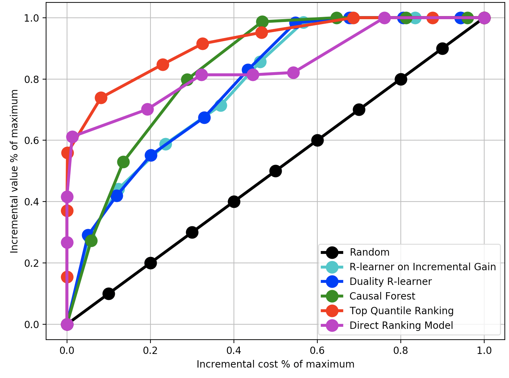

- \(\bar\tau^{c} / \bar\tau^{r}\) を最小化個人ごとの効果を推定してから割るのではなく、スコアで重みをつけた集団全体の比を損失にして、順位づけのスコア関数を学習する。
- AUCC 0.544 → 0.678マーケティングデータで、基準の Duality R-learner から制約つきランキングで 24.6% 上がった（Table 2）。
- 3 データとも首位制約つきランキングの AUCC は、マーケティングデータ 0.678、US Census 0.687、Covertype 0.915 で、比べた手法の中で最も高かった。
報酬を配る施策では、効果の大きさだけでなく、増える出費とのつり合いで相手を選ぶ必要がある
ライドシェアや EC などのネット企業は、報酬を配って利用を増やしたり、新しいサービスに誘導したりする。報酬は将来の利用を増やす一方で、出費も増やす。論文によれば、従来の実務は離反予測や、不満の残る体験の後に配るといった経験則に頼っており、処置の有無による結果の差（アップリフト）を事業の指標で捉えていなかった。
個人ごとの処置効果を推定する手法（メタ学習器、因果フォレスト、R-learner など）は、1 つの結果について効果を推定するように作られている。論文は価値とコストという 2 つの結果のつり合い、つまり効率の比 \(\Delta\text{cost}/\Delta\text{value}\) を扱えない点を問題にし、さらに個人ごとの点推定ではなく、配る集団全体の効率を最大にしたいと述べる。
目的は予算 \(B\) の範囲で増分価値の合計を最大にするユーザーの選び方である
処置 \(T\in\{0,1\}\) は報酬を配るかどうかで、ユーザーごとに価値の結果 \(Y^{r}\)（利用の継続など）とコストの結果 \(Y^{c}\)（報酬の出費など）を観測する。処置による増分を \(\tau^{r}(x)=\mathbb{E}[Y^{r}_1-Y^{r}_0\mid x]\)、\(\tau^{c}(x)=\mathbb{E}[Y^{c}_1-Y^{c}_0\mid x]\) と書くと、論文の問題は次の 0-1 ナップザック問題になる。
\(z_i\) はユーザー \(i\) に報酬を配るかどうかを表す。論文は、ここでの \(\tau^{r},\tau^{c}\) は最適化の目的の中に暗に現れる中間量であって、回帰で正確に当てる対象ではないと強調している。学習には処置をランダムに割り当てた過去の実験データを使い、処置の割り当ては特徴量のもとで結果と独立（unconfounded）と仮定する。
Duality R-learner はラグランジュ乗数で価値とコストを 1 つの結果にまとめ、R-learner 1 つで学習する
まず \(z_i\) を \(0\le z_i\le 1\) に緩め、予算制約にラグランジュ乗数 \(\lambda\ge 0\) をかけて目的に入れる。\(\lambda\) を固定すると、各ユーザーの最適解は次の効率スコア \(s_i\) の符号だけで決まる。\(s_i\ge 0\) なら配り、負なら配らない。
右辺のとおり、この式は結果について線形なので、\(Y^{E}=Y^{r}-\lambda Y^{c}\) を 1 つの結果とみなして R-learner（Nie と Wager の準オラクル推定）で学習すれば、\(s_i\) を直接推定するモデルが 1 つで済む。論文は利点として、価値とコストの相関をまとめて学べることと、本番で 1 つのモデルだけを運用すればよいことの 2 点を挙げている。
\(\lambda\) は双対問題の勾配で更新する方法も示しているが、双対関数が \(\lambda\) について区分線形で反復が非効率なため、実験では検証データで最もよい値を選んだ（マーケティングデータで 0.1、公開データで 0.05）。論文はこの手法を、以下の実験の基準手法として使う。
Direct Ranking Model はスコアで重みをつけた集団全体の「増分コスト÷増分価値」を損失にする
Duality R-learner は効果の推定と制約つき最適化の 2 段に分かれている。論文が目指すのは、個人ごとの効果の点推定を正確にすることではなく、予算の中で増分価値が最大になるユーザーの集団を見つけることである。論文はこれを、検索のランキング学習がクリック率の点推定ではなくランキング全体の目的を最適化するのになぞらえ、2 段を 1 つにまとめた Direct Ranking Model（DRM）を提案する。
DRM は特徴量からスコア \(S_i=f(x_i)\) を出し、\(s_i=\tanh(S_i)\) とした後、処置群と対照群のそれぞれの中で softmax をとって重み \(p_i\) にする。この重みで処置群と対照群の結果の差をとったものを、選ばれた集団の効果とみなす。
損失は増分価値 1 単位あたりの増分コストで、\(\Lambda_n\) は正則化項である。どの演算も微分できるので、\(f\) には線形モデルからニューラルネットまで任意の微分可能な関数を使え、TensorFlow と Adam で学習する。スコアの高いユーザーほど重みが大きくなるので、費用対効果のよいユーザーに重みが集まると損失が小さくなる。実験では公平に比べるため、\(f\) は 1 層の線形モデル \(\tanh(w^\top x+b)\) とし、正則化なし、学習率 0.01、全データの勾配で 600 反復とした。
なお、DRP（Zhou ら, AAAI 2023）の論文は、同じ考え方の既存手法 Direct Rank（Du ら, 2019）について、損失が安定な極値点に収束しないことを付録で示している（DRP の解説を参照）。
制約つきランキングは上位 \(q\%\) の境目でスコアを落とすシグモイドを入れ、その傾きを学習中に急にしていく
実務には「上位 30% のユーザーにだけ配る」「総額は予算まで」といった制約がある。DRM は制約を考えずに比を最小にするので、制約があると最良の解を見つけられないおそれがある。論文はニューラルネットで硬い制約を扱う難しさを挙げ、制約を柔らかくしてモデルの構造に組み込む 2 つの部品を提案する。
1 つ目の分位プーリング（quantile pooling）は、各反復でスコアを並べ替え、制約の境目にあたるスコア \(d\) を求める。上位 \(q\%\) の制約なら \(q\%\) 分位点、予算 \(B\) の制約ならコストの累積和が \(B\) を超える直前のユーザーのスコアである。そのうえで、境目より下のスコアをシグモイドで 0 に近づける。
この \(\hat s_i\) を DRM の softmax の \(s_i\) の代わりに使う。論文は、どの反復でも損失が制約を満たすユーザーに集中すると説明し、最大値プーリングになぞらえている。2 つ目の制約アニーリングは温度 \(t\) を学習中に上げていく工夫である。最初から \(t\) が大きいと勾配が小さくて学習が進まず、小さいままでは DRM とほとんど変わらないためである。
実験では上位分位の制約だけを使い、\(q=40\%\)、温度は 0.5 から始めて Adam の 100 ステップごとに 0.1 ずつ上げた。境目 \(d\) が動くと最適化が不安定になるため、\(d\) への勾配は止めている。予算 \(B\) による制約は定義だけで、実験はしていない。（解説者の注）式どおりに読むと、境目より下のユーザーの \(\hat s_i\) は 0 に近づくだけで、softmax の重み \(e^{0}\) は残る。
コスト曲線はスコア順に配る範囲を広げたときの増分コストと増分価値をたどる
ユーザーをスコアの高い順に並べ、上位 \(p\%\) に配ったときの増分コストを横軸、増分価値を縦軸にとる。各点の値は上位 \(p\%\) に入る処置群の人数に、その集団での平均処置効果（ATE）をかけたものである。\(p\) を 0 から 100% まで動かすと、原点から全員に配った点までの曲線になる。ランダムな順位なら直線になり、よいモデルほど直線より上にふくらむ。
AUCC（コスト曲線下の面積）は、曲線下の面積を増分価値と増分コストの最大値でつくる長方形の面積で割った値で、図1 の記号では \((A+B)/2B\) になる。論文はその範囲を \([0.5, 1)\) とし、大きいほどよいとしている。ただし、後の Table 2 には 0.5 を下回る値（R-learner G の 0.464）も載っている。

著者らのマーケティング実験データと、処置と結果を割り当てた 2 つの公開データで比べた
マーケティングデータはユーザーを無作為に処置群と対照群に分けた探索（explore）実験で集めたもので、複数の実験期間にわたって数百万件のユーザー単位のサンプルがある。各サンプルは実験開始前の特徴量、処置の割り当て、期間中に集計した価値とコストの結果からなる。
再現性のために、公開データでも実験を設計している。US Census 1990 では、子どもが 1 人以上いる 50 歳未満の米国生まれの人に絞った 225,814 件（特徴量 46）を使い、労働時間が中央値より長いことを処置、所得を価値、子どもの数に −1.0 をかけた値をコストとした。Covertype では、標高が中央値以上で 2 種類の林相に絞った 247,424 件（特徴量 51）を使い、水源に近いことを処置、山火事の発火点に近いことを価値、Lodgepole Pine であること（望ましくない側）をコストとした。どのデータも学習 60%、検証 20%、テスト 20% に分け、ハイパーパラメータは検証データで選んだ。
比較相手は価値の効果だけを R-learner で推定する R-learner G（基本推定器はリッジ回帰、傾向スコアは定数）、Duality R-learner、価値とコストの効果を 2 つの因果フォレスト（R の grf パッケージ）で推定してその比 \(\tau^{r}/\tau^{c}\) で並べる Causal Forest である。
このページの数値は arXiv v1（2020 年 4 月 21 日。arXiv の版はこの 1 つだけ）の本文と Table 2 による。2026 年 11 月の時点で、Crossref では出版版を確認できなかった。arXiv の PDF には ACM の雛形の会議名（Woodstock ’18）が残っているが、実際の掲載先ではない。論文の図は arXiv 上のライセンス CC BY-SA 4.0 に従って転載した。
3 つのデータすべてで、制約つきランキングの AUCC が最も高かった
マーケティングデータでは、価値だけを見る R-learner G はコストを考えないため AUCC が 0.464 にとどまり、論文はこれ以降 Duality R-learner（0.544）を基準にしている。Causal Forest は 0.628、DRM は 0.664（基準より 22.1% 高い）、制約つきランキングは 0.678（24.6% 高い）で、最も高かった。論文の要旨は 24.6% を「既存手法のうち最良のものと比べた改善」としているが、表で 24.6% にあたるのは Duality R-learner との比で、Causal Forest（0.628）と比べると約 8% になる（解説者の計算）。
US Census では、DRM と制約つきランキングが Duality R-learner をそれぞれ 2.8%、21.2% 上回った（AUCC 0.583、0.687）。Covertype は多くの手法で値が高い易しい問題で、DRM は 7.3% 上回り、制約つきランキングは 0.915 に達した。本文は制約つきランキングの改善を 17.9% としているが、Table 2 の値（0.915 と 0.783）から計算すると約 16.9% となる。
論文はまた、増分コストを全体の 20% に抑えたところでは、ランダムに選ぶ場合の 2 倍の増分価値が得られ、コストを 50% 減らせることになると述べている。



本番では探索群と比べた効率の改善で評価し、DRM が R-learner と因果フォレストを上回ったと報告している
本番の実験は無作為に選ぶ探索（explore）群と、モデルと予算で選ぶ活用（exploit）群を周期ごとに並べて行う。探索群のデータは次の周期の学習とオフライン評価に、活用群はオンライン評価に使う。オンラインではコスト曲線の 1 点しか観測できないので、選んだ集団の効果の比 \(R = \mathrm{ATE}^{r}/\mathrm{ATE}^{c}\) を求め、探索群に対する改善率 \((R_{\text{exploit}}-R_{\text{explore}})/R_{\text{explore}}\) で比べる。
論文は、オンラインの結果はオフラインと一致し、どのモデルも探索群を大きく上回り、DRM が R-learner と因果フォレストを一貫して上回ったと述べ、提案手法は世界の複数の地域で本番運用されているとしている。ただし、オンラインの数値は本文に示されていない。今後の課題には固定割合の無作為探索をバンディットやベイズ最適化による探索に置き換えることと、処置効果に特化した埋め込みの学習を挙げている。
個人の ROI を推定せず、集団全体の費用対効果を損失にして順位を学習する
この論文の DRM と制約つきランキングは、個人ごとの \(\tau^{r}\) や \(\tau^{c}\) を推定しない。学習するのは順位づけのスコア関数 \(f(x)\) で、損失は重みをつけた集団全体の比 \(\bar\tau^{c}/\bar\tau^{r}\) である。コストは報酬の出費のように処置によって変わる結果として扱い、その増分 \(\tau^{c}\) を価値の増分と同じ形で測る。処置は二値（配る・配らない）である。
予算制約は問題設定（0-1 ナップザック問題）にははっきり入っている。Duality R-learner はその連続緩和のラグランジュ双対から導かれ、\(\lambda\) を固定すると、\(\tau^{c}>0\) のユーザーでは \(s_i\ge 0\) が \(\tau^{r}/\tau^{c}\ge\lambda\) と同じになる。つまり、増分価値÷増分コストの比がしきい値 \(\lambda\) 以上の人に配るという、ナップザック問題の連続緩和で ROI の高い順に予算まで配る解と同じ形である（解説者の注）。ただし実験では \(\lambda\) を予算 \(B\) から決めず、検証データの AUCC で選んでいる。
DRM は予算を入れずに比を最小にし、制約つきランキングは上位 \(q\%\) または予算 \(B\) の境目を分位プーリングで損失に組み込む。実験したのは上位 40% の制約だけである。評価に使うコスト曲線と AUCC は、ROI の順位がどれだけよいかを測る指標で、比を直接学習する後続の DRP や rDRP も同じ AUCC で比べている。購買時だけ費用がかかる場合に比を 1 つのモデルで推定する方法としては、IPC もある。
@misc{zou2020heterogeneous,
title = {Heterogeneous Causal Learning for Effectiveness Optimization in User Marketing},
author = {Zou, Will Y. and Du, Shuyang and Lee, James and Pedersen, Jan},
year = {2020},
eprint = {2004.09702},
archivePrefix = {arXiv},
primaryClass = {cs.LG},
doi = {10.48550/arXiv.2004.09702},
url = {https://arxiv.org/abs/2004.09702}
}